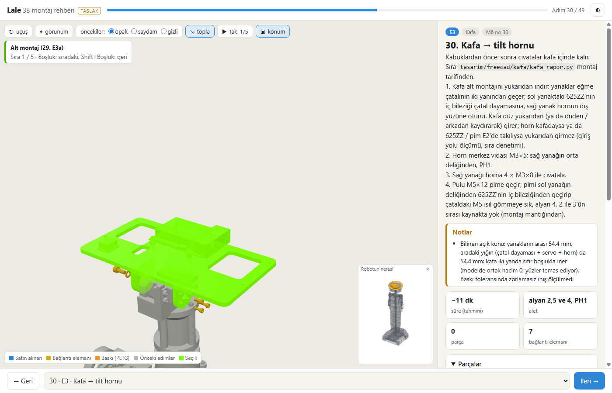
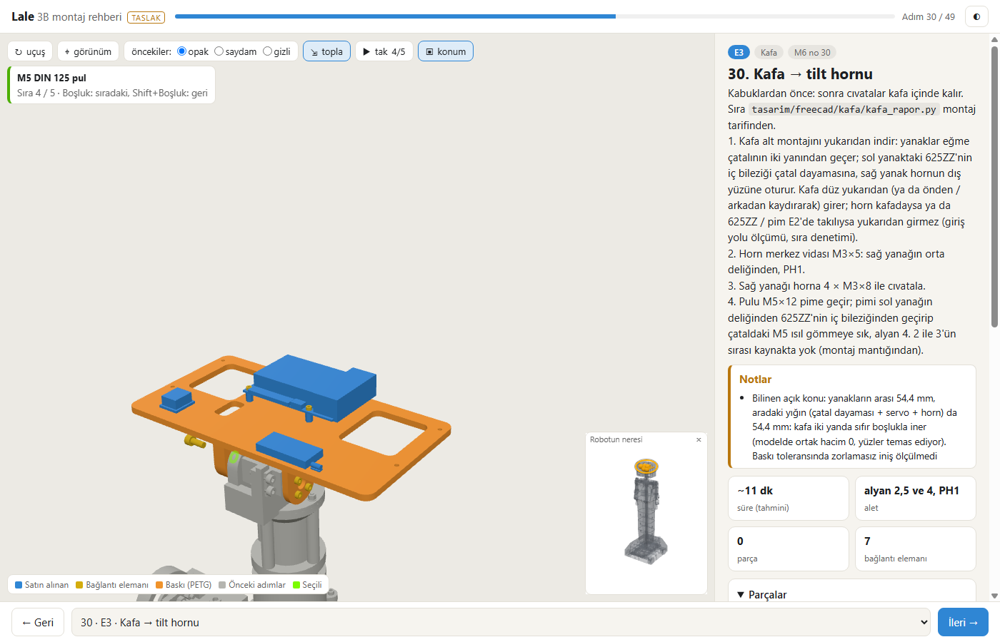
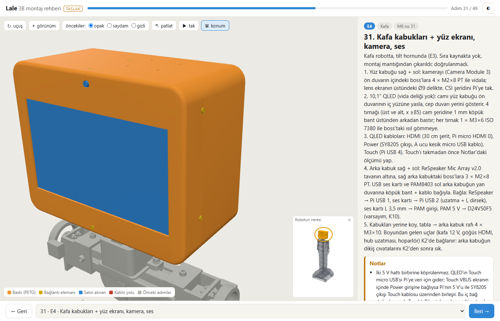
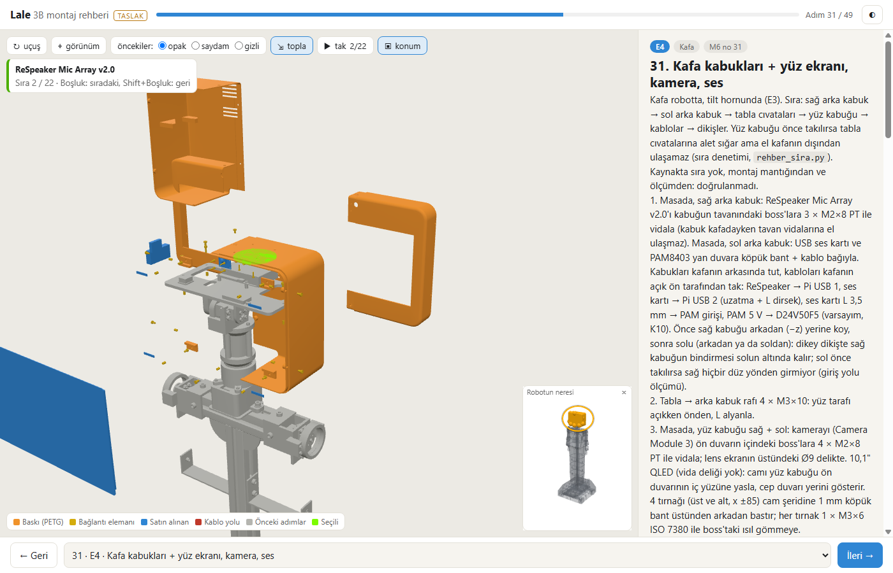
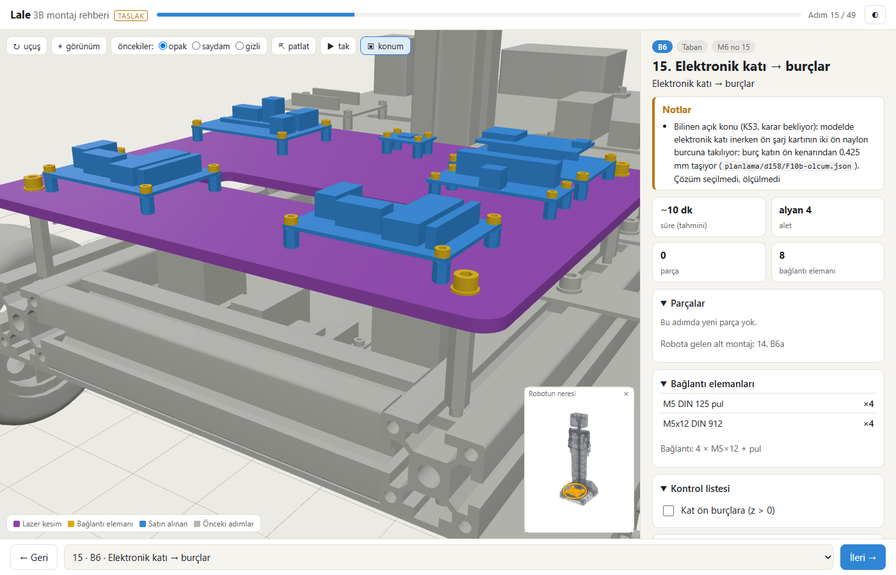

Lale F10c: rehber sıra düzeltmeleri + kalıcı sıra denetimi (P10.3)
Ajan C (ölçüm ve kayıt) · 11.11.2026 · dal lale-duzeltme · kaynaklar: F10c-brief.md, F10c-gunluk.md (A, düzeltme turu 1 dahil), F10c-kontrol.md (B), planlama/rehber/kontrol.json (05:30), F10a-dogrula.json, C'nin kendi ölçümü
robot.glb bayt aynıNe istendi
10.11'deki montaj sırası kontrolü (565 alet isteyen bağlantı, mesh üzerinde ışın + voksel) bir ölçülmüş, üç muhtemel sorun ve tutmayan üç erişim iddiası buldu. Brief (F10c-brief.md) bunları rehberde düzeltmeyi ve kontrolü her üretimde koşan kalıcı denetime çevirmeyi istedi. Adım sayısı 50 kalacak, model geometrisi değişmeyecekti.
- E4 (adım 31): dört tabla cıvatası (M3×10) bugünkü sırada alete kapalı; aday sıraları ölç, dördünün de erişildiği sırayı seç.
- E3 (adım 30): kafa düz yoldan yerine girmiyor görünüyor; CAD'de doğrula, 625ZZ + pimi E3'e taşı ya da ölçümün gösterdiği sırayı uygula; kafa en az bir yönden serbest girmeli.
- K1 (17): alt kat klemens uçları B3'e (9); F4 (36): kol servo uçlarını omuz yarığından dışarı alma satırı.
- Tutmayan üç erişim iddiası (K1, E4, H0a) ölçüme uysun; B6 (15) adımına K53 "bilinen açık konu" notu.
- Kalıcı denetim: alet + el erişimi ve perdelenme
kontrol.json'a; sınır "ulaşılamaz" 0; bilinen kapalı örneği yakaladığı sınamayla gösterilsin.
Ne yapıldı
- Yeni modüller (FreeCAD'siz, numpy):
tasarim/freecad/rehber/rehber_sira.py(alet ışını DUZ / L / L_DAR / ACILI / YOK, somunda LOKMA / ACIK_AGIZ / CEP; el: 3 mm voksel, dışarıya bağlı ve engelden ≥ 20 mm bölge; perdelenme 26 yön) verehber_giris.py(alt montajın / masa grubunun robota giriş yolu: üç eksende ışın aralıkları, ortak boy > 0,2 mm çarpışma, temas sayılmaz).rehber_uret.py8. adım;kontrol.jsonsira(içindegiris) veperdelenme. - E3: kafa tasarımın kendi montaj tarifine (
tasarim/freecad/kafa/kafa_rapor.pySIRA) göre: horn E2'de servoya (merkez vidası yok), 625ZZ E3a'da sol yanağa tek parça, E3'te kafa yukarıdan iner, sonra horn vidası, 4 yanak-horn cıvatası, pul + pim. E3'e "sıfır boşluk" notu. - E4: sağ arka kabuk + ReSpeaker (masada) → sol arka kabuk + ses kartı + PAM8403 (masada) → tabla cıvataları (önden, L alyan) → yüz kabuğu + kamera + QLED + tırnaklar (masada) → kablolar → dikişler. Sıralı takma (
tak) bu sırayı izliyor. - Metin: B3, B6, K1, E2, E3a, E3, E4, F4, H0a (
rehber_metin.py); F3 adım içi sıra ve G4 pozu veriye eklendi. F10a-dogrula.py: "önce" sayfası749627b~1'den (HEAD'den değil; F10a commit'inden beri kırıktı),veri_degismedikabul ölçütü değil bilgi.
Kabul tablosu (C'nin ölçtüğü)
| Ölçüt | C'nin ölçtüğü | Kaynak | Günlükteki sayı | Durum |
|---|---|---|---|---|
| Adım, konsol, parça | 50 / 50, konsol 0, 1192 ↔ 1192, her parça tek adımda | kontrol.json ozet | aynı | geçti |
| Taşınan parçalar | tam 5 (aşağıda); başka parçada alan farkı 0; kimlik kümesi aynı; satırda birden çok kez geçen 0 | C'nin betiği, HEAD ↔ çalışma ağacı rehber-veri.json | 5 | geçti |
| Model | git diff --quiet HEAD -- rehber/veri/robot.glb ve robot-glb.js: 0 / 0. tasarim/freecad/ altında bu paketin değişikliği yalnız rehber/ | git | aynı | geçti |
| Denetim | yasak 0, ASCII 0, gruplama 0, çelişki 0, zorunlu eksik 0 | kontrol.json denetim | aynı | geçti |
| Sıra denetimi | ulaşılamaz 0; DUZ 469, L 39, ACIK_AGIZ 21, ACIK_AGIZ_DAR 9, CEP 14, LOKMA 11, POZA_BAGLI 2 (toplam 565); sınama 5 / 5 (el 20 mm); duyarlılık el 15 / 12 mm'de ayırmıyor (bilgi) | kontrol.json sira | aynı | geçti |
| Giriş yolu (kalıcı) | girilemez 0; E3 kafa +y, +z, −z; sağ arka kabuk −z; sol arka kabuk −x, −z; yüz grubu +z; sınama 3 / 3 (eski E3 sırası kapalı, yeni açık, sol önce takılıyken sağ kabuk kapalı) | kontrol.json sira.giris | aynı | geçti |
| E3 bağımsız (C) | yeni sıra +y, +z, −z serbest; −y 12 mm, ±x 0 mm; dinlenmede ortak hacim 0. Eski sıra (HEAD verisi) +y, +z, −z 0 mm (horn ve horn vidası ↔ servo mili) | aşağıda | +y serbest; −y 12,25 mm | geçti |
| E4 bağımsız (C) | sağ arka kabuk önce: −z serbest; sol arka kabuk, sağ takılıyken: −z serbest. Tabla cıvataları: düz alet yolu 63,4 mm, L uzun kol 90 mm serbest yön 9 / 5 / 10 / 4 | aşağıda | 63,5 mm; sağ −z, sol −x / −z | geçti |
| Perdelenme | 50 satır, toplam tamamen gizli 291 (eşik yok) | kontrol.json perdelenme | 291 | ölçüm |
| 55 sayfa (HTML 55), en küçük yazı 8,1 pt (PyMuPDF ile C), 50 adım görüntüsü; görüntüsüz 5 sayfa = 5 devam sayfası (19, 34, 36, 40, 55); taşan 0 | PyMuPDF, kontrol.json yazdir | 55, 8,1 pt | geçti | |
| Yazdırma kareleri | 50 / 50 çizili, eksik 0, boş 0, en düşük oran 0,0595 | kontrol.json yazdir_goruntu, F10a-dogrula | aynı | geçti |
F10a-dogrula (depodaki hâliyle) | çıkış 0, 399 s: seçim 6 / 6, ek sınamalar 6 / 6, ağsız dış istek 0, konsol 0, kadraj ortancası 0,1733 → 0,4013, taşan 0, küçük görünüm 50 / 50 + 50 / 50 (360 px), CDN 0; veri değişti (bilgi) | C'nin koşusu | 0 | geçti |
Canlı sınama (başsız Chrome, file://) | 30: tak 1 alt montaj → 2 horn vidası → 3 M3×8 ×4 → 4 pul → 5 pim. 31: 1 sağ arka kabuk → 2 ReSpeaker → 3 dizi vidası → 4 sol arka kabuk … 7 PAM8403 → 8 M3×10 ×4 → 10 yüz kabuğu … 22 kablo şemaları | C'nin koşusu | aynı sıra | geçti |
| Çakışma, regresyon | carpisma_kos kontrol 0 (17 dosya kayıtla aynı); regresyon 10 / 10 GEÇER, kötüleşen yok | C'nin koşusu | 0 / 10 / 10 | geçti |
F9b-dogrula | 0 (demo yeniden üretilmeden önce ve sonra) | C'nin koşusu | 0 | geçti |
F9c-dogrula | çıkış 1 (bilinen: sonuç sayfası F9c'den beri yenilenmedi; P10.9) | C'nin koşusu | — | bilinen |
Günlükle küçük farklar: E3 sağ yanak horn merkez vidasının el bölgesine uzaklığı kontrol.json'da 20,5 mm (günlük D1: 23,5); −y yolu C'de 12 mm (1 mm adım), A'da 12,25 mm (0,25 mm adım); tabla cıvatası düz alet yolu C'de 63,4, A'da 63,5 mm. Sonucu değiştiren fark yok.
Kontrolün bulduğu yanlış ve düzeltme
B-1 (engelleyen): A'nın ilk teslimi E3 için "kafa yalnız eğme çatalına karşı bile 26 yönün hiçbirinden girmiyor, geometrik olarak kilitli; karar gerekiyor" dedi. B'nin hacimsel süpürmesi (yüzeyden 0,15 mm içeri kaydırılmış noktalar; temas eden yüzler çarpışma sayılmaz) kafanın yalnız çatala karşı +y'de serbest girdiğini gösterdi. Kök neden: A'nın süpürmesi (0,05 mm tolerans, ışın) x = −24,2'deki ortak yüzü, yani temasın kendisini çarpışma saydı. Kilit yalnız eksenel geçmelerde: horn ↔ servo mili kanalı, pim, 625ZZ iç bileziği.
Düzeltme turu 1: A yeni bir yöntem yazdı (rehber_giris.py, eşik 0,2 mm) ve aynı sonucu buldu; eşik 0'da (temas çarpışma) +y 4,25 mm'de "duruyor", çarpan ışın 1, derinlik 0,00 mm: ilk turdaki hatanın aynısı. Parçalar tasarımın tarifine göre taşındı.
C'nin bağımsız E3 ölçümü
B'nin süpürme modülü (supur.py, iç kaydırma 0,15 mm; yani ortak hacim derinliği yaklaşık 0,15 mm'yi geçmeyen temaslar çarpışma sayılmaz), kümeler veriden türetildi (hareketli: tezgâh anahtarı "kafa" olan parçalar; engel: b < 30 ve kafanın yakınındaki parçalar), adım 1 mm, A'nın rehber_giris.py'si kullanılmadı.
| Sıra | Hareketli / engel | +y (iniş) | Öbür yönler | Çarpan |
|---|---|---|---|---|
| Yeni (çalışma ağacı verisi) | 22 parça (625ZZ iç + dış bilezik dahil; horn ve horn vidası hariç) / 26 parça (horn servoda; pim, pul, iç bilezik yok) | serbest | +z, −z serbest; −y 12 mm; +x, −x 0 mm | −y kafa iskeleti ↔ çatal; +x iç bilezik ↔ çatal; −x iskelet ↔ horn |
| Yeni, iç kaydırma 0,05 mm (duyarlılık) | aynı | serbest | — | — |
| Eski (HEAD verisi, aynı tanım) | 23 parça (horn + horn vidası kafada) / 28 parça (iç bilezik, pim, pul E2'de) | 0 mm | +z, −z 0 mm | horn ve horn vidası ↔ servo çıkış mili |
Dinlenme konumunda ortak hacim üç koşuda da 0. Süre 729 / 35 / 81 s. Ölçülmedi: "horn servoda ama 625ZZ iç bileziği ve pim E2'de" ara sırası (rehber E3 metni bu durumda da "yukarıdan girmez" diyor; ölçülmüş olan yalnız horn kafadayken).
Taşınan 5 parça
| Parça | Önce | Sonra | Değişen alanlar | Neden |
|---|---|---|---|---|
p0830 Tilt horn 25T alüminyum disk | 29 E3a | 28 E2 | a, b, t, u, ub | servoya, merkez vidası olmadan |
p0831 Tilt horn merkez vidası M3 | 29 E3a | 30 E3 | a, t, ub | kafa indikten sonra sağ yanak deliğinden, PH1 |
p0733 625ZZ rulman (iç bilezik) | 28 E2 | 29 E3a | a, b, t, u, ub | dış bilezikle tek parça, sol yanağa pres |
p0734 Pim pulu M5 | 28 E2 | 30 E3 | a, b | sol yanak deliğinden, kafa indikten sonra |
p0735 Pim cıvatası M5x12 | 28 E2 | 30 E3 | a, b | aynı, alyan 4 |
C'nin karşılaştırması: git show HEAD:rehber/veri/rehber-veri.json ↔ çalışma ağacı; parça satırındaki adım da her biri için aynı yöne taşınmış.
E4'ün yeni sırası
- Masada sağ arka kabuk + ReSpeaker (3 dizi vidası), robota arkadan (−z).
- Masada sol arka kabuk + USB ses kartı + PAM8403, robota arkadan ya da soldan.
- Tabla → arka kabuk rafı 4 × M3×10: yüz tarafı açıkken önden, L alyanla.
- Masada yüz kabuğu + kamera + QLED + 4 tırnak; kablolar kafanın açık ön tarafından; yüz kabuğu önden (+z).
- Kablolar, dikişler (dikiş cıvataları K2'den sonra).
Neden orkestratör önerisi (arka kabuklar → tabla → yüz) aynen alınmadı: o sırada (A'nın C1 adayı) tabla cıvataları açılıyor ama ReSpeaker'ın tavan vidaları kabuk kafadayken kapanıyor (dizi vidası 2 YOK); ReSpeaker'ı masada kabuğa vidalamak bunu çözdü (C5). Düzeltme turunda giriş yolu ölçümü ayrıca arka kabukların ayrı iki birim olduğunu ve sıranın önemli olduğunu gösterdi: dikey dikişte sağ kabuğun bindirmesi solun altında kaldığı için sol önce takılırsa sağ hiçbir düz yönden girmiyor (A'nın ölçümü ve kalıcı sınama). Bu yüzden "önce sağ, sonra sol".
C'nin bağımsız E4 ölçümü: B'nin süpürme modülüyle (iç kaydırma 0,15 mm, adım 1 mm, engel: hareketli birimin kutusundan 40 mm içindeki parçalar) sağ arka kabuk + ReSpeaker + dizi vidaları, adım 31 başındaki robota karşı −z serbest (engel 84 parça, 1824 s); sol arka kabuk grubu, sağ grup takılıyken −z serbest. B'nin ışın betiği (e4_b.py) yeni veriyle: dört tabla cıvatasının düz alet yolu 63,4 mm; L alyanın uzun kolu (90 mm) yüz kabuğu yokken 9 / 5 / 10 / 4 yönde serbest (ön cıvatalarda kol ucu kafanın dışında), yüz kabuğu takılıyken 3 / 5 / 4 / 4 (ön cıvatalarda yalnız içe dönük yönler). Ölçülmedi (sistem belleği azalınca ortam koşuyu durdurdu, yeniden başlatılmadı): sol arka kabuğun −x yönü, "sol önce takılıyken sağ girmiyor" iddiası ve yüz grubunun önden girişi; bu üçü yalnız A'nın ölçümüne ve kontrol.json sınamasına dayanıyor.
"Ulaşılamaz 18 → 0" kırılımı
| Grup | Adet | Ne |
|---|---|---|
| Gerçek sıra düzeltmesi | 4 | E4 tabla cıvataları (yeni E4 sırası). Brief'teki "önce 4" bu sayı. |
| Eski verinin yapaylığı | 11 | E4 tırnak 4, kamera 4, dizi vidası 3: adım içi sıra (sira_grup) yokken E4'ün bütün parçaları engel sayılıyordu; eski metin de bunları kabuk kapanmadan yaptırıyordu. |
| Metinde yazılı bilginin veriye girmesi | 3 | F3 taşıyıcı M6 1 (adım içi sıra), G4 kaset cıvatası 2 (poz S1 −45 / S2 90). |
Denetimin sınırları
- El modeli tek tip, 20 mm el payı varsayımı. Bilinen kapalı örnekler yalnız 20 mm'de ayrılıyor; 15 ve 12 mm'de eski E4 sırası da açık görünüyor. C5'in eski sıraya üstünlüğü bu varsayıma dayanıyor (bağımsız ışın ölçümü ön iki cıvatada farkı el modelinden bağımsız da gösteriyor).
- Giriş yolu yalnız 6 eksen yönünde (A'nın scratchpad ölçümünde E4 için 12); eğik ya da dönerek giriş, sürtünme ölçülmüyor.
- Kablolar modelde yok: kablo takma ("kabloları açık ön taraftan tak", "yüz kabuğunu önde tut") ve kablo boyları ölçülmedi; klemens ve fiş bağlantıları alet isteyen bağlantı sayılmıyor.
- Baskı toleransı ölçülmedi: E3'te iki yanda sıfır boşluk (K54).
- Poz bağımlı bağlantılarda (G4) el katmanı yok, yalnız ışın; somun karşı anahtarı ile cıvata aynı anda ölçülmüyor; "tezgâh" işaretli gruplar kendi içinde ölçülüyor, robota girişleri ayrıca giriş yolu ölçümüyle.
- numpy yoksa iki alan "atlandı" ve
gecti: true: çıkış kodu görmez, yalnız konsol vekontrol.jsonsöyler.
Önce / sonra











C ayrıca PDF sayfa 30–33'e (adım 28–31) ve planlama/rehber/goruntu/adim-30.png'ye baktı: metinler, notlar ve görüntüler dolu. Brief dışı fark edilen: adım 28 alet hâlâ "alyan 3 / 4" (alyan 4 pim içindi, pim E3'e geçti), adım 29 alet hâlâ "PH1" (horn vidası E3'e geçti); B3 kablo metninde "çevre'nin" yazımı. Rehber bu pakette yeniden üretilmedi, bunlar sonraki rehber turuna.
Açık kararlar
- K53 (F10b): ön şarj kartı burcu × elektronik katı. Rehber B6'da "bilinen açık konu" notu var; çözüm seçilmiş gibi yazılmadı.
- K54 (yeni): E3 kafa inişinde sıfır boşluk (yanaklar arası 54,4 mm ↔ yığın 54,4 mm). Seçenekler: a) pay yok; b) yanak iç yüzlerine 0,2–0,3 mm pay (geometri değişikliği, tarama gerekir); c) ilk baskı kuponunda dene. Öneri c, zorlarsa b. Karar Ahmet'te. Kuyruk: açık 49, toplam 54.
F10d'ye devredilenler
- Panel "Parçalar" ve "Bağlantı elemanları" tabloları sırayı göstermiyor (listede yüz kabuğu tabla cıvatasından önce): satırları
sira_grup'a göre grup başlıklarıyla bas. - Perdelenme 291 tamamen gizli yeni parça (en çok E4 46, F5 36, F2 30): kabuk adımları alt adımlara bölününce eşik konacak.
- İki kollu tezgâh adımlarında kadraj (21, 43, 45, 46); saydam kip tek başına 31 / 33'te içeriyi göstermiyor; adım 25 pan hornu görünmüyor.
- Hornun E2 patlatma yönü radyal (servo ekseni değil): görsel.
Kayıt
| Commit | Konu |
|---|---|
98d5a3d | 55 dosya: tasarim/freecad/rehber/ (yeni rehber_sira.py, rehber_giris.py), rehber/veri/, rehber/goruntu/, rehber/app.js, planlama/rehber/ üretici çıktıları + R-gunluk.md, README.md, F10c-* (brief, günlük, kontrol, görüntüler), F10a-dogrula.py / .json, karar-kuyrugu.md (K54), demo |
| bu rapor | F10c-rapor.html |
| planlama | planlama/dongu-158.md (olduğu gibi) |
Her commit açık git add listesiyle. Dışarıda kalanlar: oturum öncesinden kalan tasarim/freecad/kabuk/gorsel/*.png, montaj/yerlesim-kontrol.json ve izlenmeyen klasörler. F10a-dogrula.py'nin yeniden yazdığı F10a kanıt kareleri kayıttaki hâline döndürüldü. Demo parmak izinde kuyrukla birlikte rehber-veri.json anahtarı da değişti (veri bu pakette yeniden üretildi); sayfanın öbür satırları aynı.